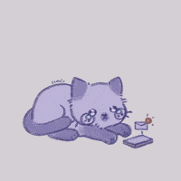

Sorry to see you go

Startiles was uninstalled. Optional feedback helps us improve — it takes under a minute.
Your shortcuts were ordinary bookmarks, so they are still in your bookmarks, in the Startiles Speed Dial folder.

Startiles was uninstalled. Optional feedback helps us improve — it takes under a minute.
Your shortcuts were ordinary bookmarks, so they are still in your bookmarks, in the Startiles Speed Dial folder.